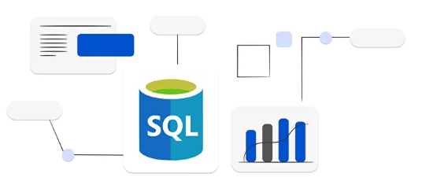
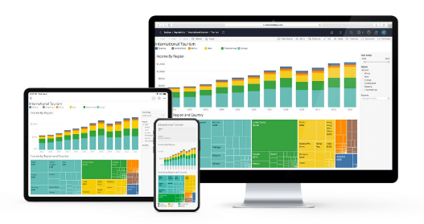
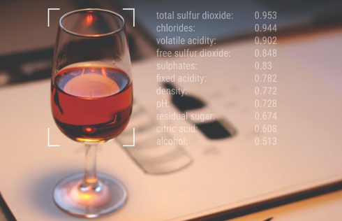

Hello, I'm Suyash Arlimar, a Master's graduate in Industrial Engineering with a passion
for data analytics. Armed with a robust skill set and a touch of magic, I've delved into predictive modeling using Python,Tableau, Sql and Power Bi
Join me in navigating the industrial labyrinth, where I turn data into meaningful outcomes and informed decisions. Let's embark on this adventurous data journey together!
Amidst the dynamic food delivery landscape, this study endeavors to elevate customer experience by introducing a Predicted Delivery Time feature for a meal delivery application. The comprehensive research involves intricate calculations of delivery times, considering factors like order volume, distance, traffic conditions, city types, weather, and delivery crew features. Utilizing data analytics and machine learning algorithms on Zomato's dataset, the project achieved an 80% accuracy in predicting student performance. The initiative focuses on scalability through modular code development, optimizing training and prediction pipelines. Efficient version control and collaboration were ensured via GitHub, and user accessibility was heightened by deploying a Flask application on AWS. The deployment on an EC2 instance ensures seamless availability for users.

Explored the realm of Zomato Data Analysis, delving into customer behavior and menu dynamics. Uncovered intriguing patterns in loyalty and highlighted the significance of initial dining choices. Project focused on understanding the nuances of Zomato's culinary landscape
Conducted a meticulous Data Analysis in SQL Server, extracting valuable insights from pizza sales data to inform strategic decision-making. Formulated key performance indicators (KPIs) encompassing Best and Worst Pizza Rankings, Monthly and Weekly Sales Trends, Sales by Pizza Size and Category, Total Revenue, Pizzas Sold, Orders, and Average Pizzas per Order. Unveiled impactful metrics, identifying trends and top-performing pizzas, with a focus on visualizing data to offer actionable insights for optimizing sales strategies

In the realm of HR analytics, the Tableau dashboard is fortified with key performance indicators (KPIs) crucial for workforce insights. These encompass average age, active employees, total employee count, attrition count, attrition rate, job satisfaction rating, education-wise attrition, and department-wise attrition. This robust set of metrics offers a holistic view of workforce demographics, retention, and satisfaction levels. HR professionals and decision-makers leverage these insights to assess and elevate organizational effectiveness and employee engagement. The interactive nature of the dashboard facilitates dynamic exploration and in-depth analysis, empowering users to glean valuable insights from these critical HR metrics
Collaboratively engineered a diamond price prediction model using Python, delving into the correlations among various attributes and their impact on diamond prices. Employed machine learning techniques to uncover valuable insights from the dataset. Demonstrated proficient data analysis skills in Python by implementing a regression models for accurate price predictions.

Commencing with exploratory data analysis and feature engineering, I meticulously identified key factors influencing wine quality using a dataset from the UCI repository. Structuring the project for scalability and modularity, I established an organized SRC folder, a training pipeline, prediction pipeline, and a setup.py for streamlined coding. To enhance accessibility, I developed a Flask application, pushed it to GitHub, and deployed it on both AWS. Taking a step further, I dockerized the application for portability and uploaded it to the ECR repository. The culmination involved deploying the application on an EC2 instance, ensuring seamless accessibility and utilization.